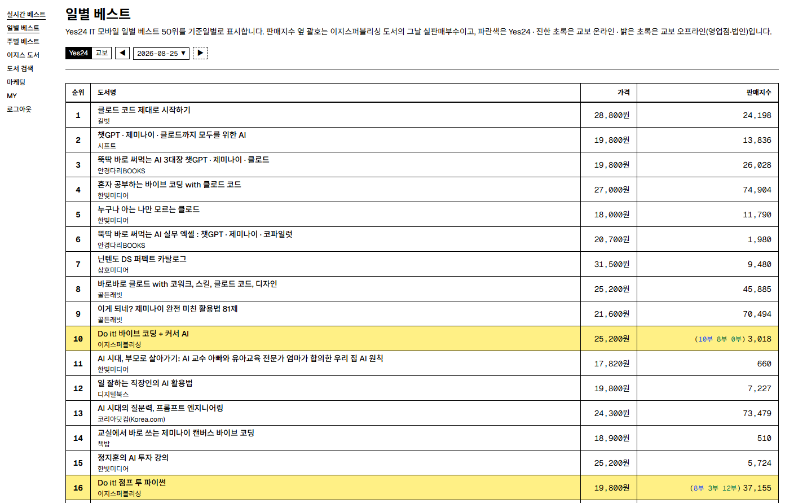
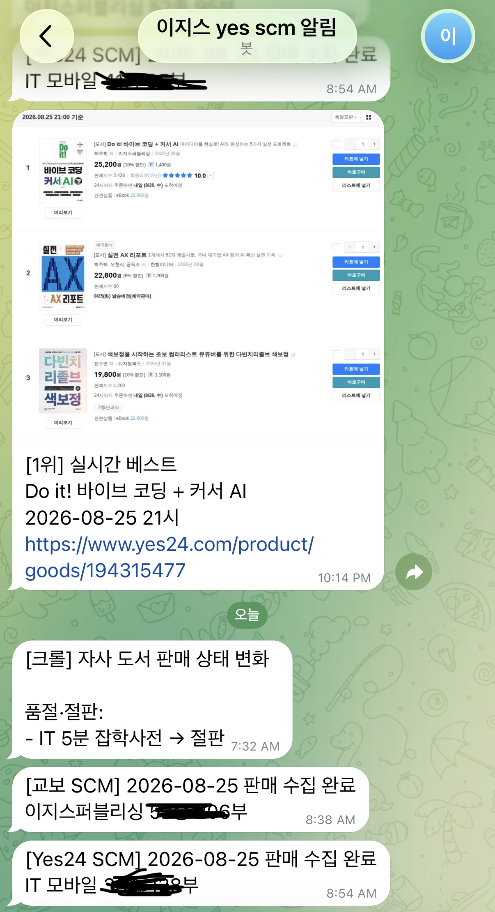

안녕하세요.
이 웹사이트는 열화당 편집자 채용 지원자 손계영의 자기소개서, 이력서, 활동을 소개하는 공간입니다.
자기소개서
「애정」
롤랑 바르트는 텍스트의 즐거움이 공간으로부터 온다고 말했습니다. 작가는 글을 쓰면서 어디에 있는지 모르는 독자를 찾아 나서야 합니다. 그는 그를 유혹해야 합니다. 그 과정에서 즐김의 공간이 생겨납니다. “예측불허의 즐김이 가능한 그런 공간. 모든 것이 끝나지 않기를, 놀이가 저기 있기를.”
제 과거를 한 평면에 펼쳐 놓고 그 위로 바르트의 말을 투과시켜 보면, 제가 돌아다닌 곳은 텍스트만의 공간이 아니었습니다. 저를 유혹하고 그 안으로 비집고 들어갈 틈을 보여준 것은 텍스트보다 책이었습니다. 책은 텍스트와 비슷하지만 또 다른 고유의 공간을 만듭니다. 책은 그 자체로 체험될 수 있습니다. 감수성 혹은 취향의 가장 강렬한 형태를 애정이라 부른다면, 제가 애정하는 것은 바로 그 체험입니다.
커버 레터를 쓰기에 앞서 저의 ‘즐거움’은 무엇일지 고민했습니다. 내가 만든 즐거움의 공간을 하나로 꼽을 수 있을까요? 아쉽게도 저는 좋아하는 것이 너무 많았고, 그것들은 자주 바뀌었습니다. 10대에는 판타지 소설과 애니메이션을, 20대 초반에는 게임을 좋아했고 그 후로는 영화와 책을 보고 있습니다. 스포츠는 항상 함께했는데, 초등학생 때는 축구, 중학생 때는 야구, 고등학생 때는 농구, 대학생 때는 e스포츠, 지금은 다시 NBA를 틀어 놓고 있습니다. 제 세계의 모양은 나무뿌리처럼, 좀 더 희미하게는 구름처럼 펼쳐져 있습니다. 저의 즐거움을 정하는 일은 이 흐릿한 세계를 탐색할 시작점을 고르는 일 같습니다. 그렇다면 제가 선택할 첫 번째 취향은 역시 책입니다.
제가 애정하는 것은 텍스트보다 자본주의 시장에서 상품으로 판매되는 책입니다. 저는 책을 사는 순간도 즐겁고, 책꽂이에 꽂는 순간, 그것을 바라보는 순간, 텍스트를 읽는 순간도 모두 즐겁습니다. 책은 텍스트의 경험입니다. 책의 모양은 텍스트의 즐거움을 바꿉니다. 작은 판형의 책은 저를 야외로 이끌고, 큰 판형의 책은 스탠드가 켜진 책상 앞에 앉게 합니다. 책이 복제되고 유통되는 상품이라는 사실은 어디에든 나와 똑같은 책을 가진 사람이 존재할 수 있음을 뜻합니다. 그렇게 독서 경험은 개인을 넘어 공동체로 확장될 수 있습니다. 책에는 영화처럼 크레딧이 붙습니다. 그 안에는 책이 사용될 순간을 함께 고민한 사람들의 모습이 겹쳐 남아 있습니다. 그 모습을 상상하면 저는 텍스트보다 책의 공간을 더 애정할 수밖에 없습니다.
저의 애정을 좀 더 넓게 아우를 수 있는 단어를 찾자면 취향입니다. 저는 취향을 순전히 주관적인 선호의 영역으로 간주하는 태도를 싫어합니다. 수전 손택의 말을 빌리면, 취향은 모든 자유로운 인간의 반응을 지배합니다. 취향보다 더 결정적인 것은 없습니다. 사람에 대한 취향, 시각적 취향, 감정적 취향뿐 아니라 행동, 도덕성, 지성에도 취향이 있습니다. 대상이 무엇이든 집착이 담긴 취향은 텍스트를 찢고 틈을 내어 그 안에 공간을 만들어 냅니다. 그곳은 제가 바라던 즐김의 공간입니다. 그렇다면 제 취향은 취향에 대한 취향이라고 말할 수 있겠습니다.
읽는 즐거움만큼 놀라운 것은 만드는 순간입니다. 요즘 제가 빠져 있는 취미는 핸드메이드 웹입니다. 핸드메이드 웹은 웹을 플랫폼이 아닌 개인적인 공간으로 다루는 놀이 같은 운동입니다. 웹사이트는 모두에게 유용할 필요가 없습니다. 취향이 담길수록 더 즐거운 공간이 됩니다. 최근에는 핸드메이드 웹으로 독서 감상 웹사이트를 만들고 있습니다. 컴퓨터공학을 전공했지만, 코딩을 할 줄 안다는 사실이 이토록 기뻤던 적은 없습니다. 독서 모임에서 직접 만든 웹사이트를 소개하고, 이를 바탕으로 새로운 이야기를 나누며 책을 또 다른 방식으로 즐기고 있습니다. 자신의 취향을 담아 그럴듯한 무언가를 만들 수 있다는 사실은 정말 놀랍습니다. 저는 제가 책도 그렇게 만들 수 있으면 좋겠습니다. 취향이 담긴 책을 만들고 싶습니다.
「편집자」
저는 취향을 책임지는 편집자가 되고 싶습니다. 제가 좋아하는 편집자들은 자신의 취향에 집착하는 사람들입니다. 그들이 만든 책에는 내용뿐 아니라 애정까지 드러납니다. 작가의 취향이 텍스트를 흥미롭게 만든다면, 편집자의 취향은 책을 흥미롭게 만듭니다. 편집자는 책의 공간을 준비해야 합니다. 여기서 준비란 그 공간을 미리 꾸민다는 뜻은 아닙니다. 공간은 독자가 책을 경험하는 순간에 생겨납니다. 저는 그 공간이 생겨날 수 있도록 책을 편집하고 싶습니다. 독자가 책에서 누구도 상상하지 못한 즐거움을 발견하면 좋겠습니다.
제가 기획해 책으로 만들고 싶은 텍스트는 문학 텍스트입니다. 에두아르 르베는 이렇게 말했습니다. “‘나는 소설을 좋아하지 않는다’는 내가 문학을 좋아하지 않는다는 의미가 아니며, ‘나는 내러티브 영화를 좋아하지 않는다’는 내가 영화를 좋아하지 않는다는 의미가 아니다.” 마찬가지로 문학 텍스트를 좋아한다고 해서 소설을 편집하고 싶다는 뜻은 아닙니다. 저는 한 가지 목적으로만 수렴하고, 그 목적을 다하면 빛을 잃어버리는 텍스트를 좋아하지 않습니다. 제가 편집하고 싶은 텍스트는 인문, 사회, 에세이, 예술, 실용서 등 장르를 가리지 않는 문학 텍스트입니다.
편집 경험은 없지만, 가장 비슷한 경험을 꼽자면 앞서 이야기한 웹사이트 제작입니다. 저는 웹사이트를 만들 때 먼저 두 가지 화면을 기획합니다. 세로로 긴 모바일 화면 하나와, 요소를 블록 단위로 묶어 재배치한 가로로 긴 PC 화면 하나입니다. 요소를 블록 단위로 묶는 과정은 텍스트나 이미지를 일정한 기준으로 정리하는 일입니다. 그리고 목차 역할을 하는 내비게이션 바를 만들어 사용자가 편하게 내용을 볼 수 있게 합니다. 이 과정에서 가장 중요하게 여기는 가치는 사용자의 재미입니다. 사용자가 텍스트를 읽고, 버튼을 누르고, 스크롤을 내리는 동안 웹사이트를 즐기기를 바랍니다. 이처럼 웹사이트 제작은 기술적인 과정은 다르지만, 내용을 구조화하고 생각을 전달한다는 점에서 책 편집과 닮았습니다.
2026년, 지금 제 좌우명은 “새롭게, 지속 가능하게”입니다. 앞서 새로움을 위한 애정을 이야기했다면, 이번에는 지속 가능성에 관해 이야기하고 싶습니다. 제가 말하는 지속 가능성은 환경 문제가 아닙니다. 자본주의 사회에서 지속이란 소비자는 계속 즐길 수 있고, 기업은 꾸준히 공급할 수 있는 상태라고 생각합니다. 좋은 책은 품질만큼 접근성이 중요합니다. 놀이가 계속되려면 책은 합리적인 가격으로 구할 수 있어야 하고, 출판은 경제적으로 성립하는 사업이어야 합니다. 저는 경영학을 공부하고 컴퓨터공학을 전공했으며, 지금은 출판 마케터로 일하고 있습니다. 편집과는 거리가 먼 이력이지만, 지속 가능한 책을 만드는 데에는 도움이 되리라 생각합니다.
마케터로 일하며 출판 산업을 가까이에서 이해하게 되었습니다. 매일 서점을 드나들고 다른 출판사의 인스타그램을 살펴보며, 요즘 출판 시장이 어떻게 독자를 만나는지 확인하고 있습니다. 출판이 AI와 친구가 되는 방법도 고민합니다. AI와 함께 서점 SCM과 베스트셀러 순위를 분석하는 웹사이트를 만들었고, 디스코드 서버를 꾸며 독자들과 온라인 스터디를 진행하기도 했습니다. 기회가 된다면 열화당의 책으로 웹사이트를 만들어 독자들과 새로운 방식으로 소통해 보고 싶습니다. 또 필요하다면 서점 미팅이나 마케팅 활동에도 적극적으로 참여할 수 있습니다.
저는 책을 정말 좋아합니다. 어쩌다 출판계에 왔느냐는 질문을 자주 받는데, 그때마다 솔직하게 책이 좋아서 왔다고 대답합니다. 파트리크 모디아노의 『어두운 상점들의 거리』를 읽으면 기억조차 온전히 내 것이라고 확신할 수 없다는 느낌이 듭니다. 하지만 이를 뒤집어 생각하면, 어떤 기억이든 내 것이 될 수 있다는 뜻 아닐까요? 어떤 책은 저자보다 내가 더 깊이 공감하게 됩니다. 어떤 시리즈는 편집자보다 내가 더 소중히 여기게 됩니다. 책은 이런 자유를 선사합니다. 아직 제가 편집을 잘 모른다는 사실을 잘 알고 있습니다. 그 사실이 괴로울 만큼 편집을 더 깊이 배우고 싶습니다. 사람들에게 즐거움을 전하는 편집자가 될 수 있으면 좋겠습니다.
끝까지 읽어 주셔서 감사합니다.
손계영 드림
이력서
프로필
- 이름 : 손계영
- 나이 : 30세
- 생년월일 : 1997. 03. 12
- 휴대폰 : 010-7270-5819
- 이메일 : giyenim97@gmail.com
- 주소 : 서울시 마포구 연남동
학력사항
- 2013.03 ~ 2016.02 송도고등학교 졸업
- 2017.03 ~ 2021.02 서울시립대학교(경영학부) 중퇴
- 2021.03 ~ 2025.02 인하대학교(컴퓨터공학과) 졸업(3.87/4.5)
경력사항
- 2026.03 ~ 현재 이지스퍼블리싱 온라인 마케터
교육
- 2025.01 ~ 2025.05 한겨레교육 출판 마케터 준비반 수료
- 2025.05 ~ 2025.11 서울출판예비학교(sbi) 21기 출판 마케터 과정 수료
자격증 및 수상
- 2024.05 인하대 소프트웨어융합대학 캡스톤디자인 장려상
- 2024.12 TOEIC 850점
완독 스터디 디스코드
완독 스터디를 기획·진행하는 과정에서 ‘Do it! 책코단 | 책으로 코딩 공부하는 사람들’ 디스코드 서버를 만들고 운영했습니다.
- 디스코드 서버를 온라인 독서실로 활용
- 음성 채널에 들어가면 공부 시간이 자동으로 기록되는 시스템 개발
- 사용자가 일간, 주간, 월간 출석과 공부 시간을 확인할 수 있는 시스템 개발
- 기존 스터디와 비교해 완주율 약 2배 증가(34.1% → 66.7%)


제미나이 모의고사 웹사이트
《된다! 하루 만에 끝내는 제미나이 활용법》 책을 바탕으로 모의고사 웹사이트 콘텐츠를 제작했습니다.
- 수능 콘셉트로 문제 구성, 디자인, UI 구현
- 편집자님의 제안으로 책 앞부속에 수록


온라인 서점 데이터 자동화
YES24와 교보문고의 IT 도서 순위와 자사 도서 판매량을 매일 자동으로 수집하는 시스템을 만들었습니다.
- 매일 아침 IT 분야 YES24 일간 베스트, 교보문고 일간 베스트, 이지스퍼블리싱 도서 판매량 데이터 수집
- 데이터를 통합해 웹사이트로 확인할 수 있는 대시보드 구현
- 베스트 1위 같은 이벤트가 발생하면 텔레그램으로 메시지 알림



로저 프라이 평전
서울출판예비학교(sbi)에서 미출간 원고를 실제 도서로 출간하는 프로젝트에 마케터로 참여하여, 시장 조사 보고서와 마케팅 기획안을 작성했습니다.
- 시장 조사: 예술·인문 분야 경쟁도서 및 유사도서를 분석하여 원고의 차별성을 도출
- 콘셉트 도출: 표1234를 직접 작성하며 책의 콘셉트와 핵심 마케팅 포인트를 구체화
- 마케팅 기획: 타깃 독자층을 세분화하고, 각 독자층에 맞는 차별화된 마케팅 전략과 홍보 채널을 기획


독서 감상 웹사이트
핸드메이드 웹 모임에서 『하이퍼링크』로 독서 모임을 진행하고, 독서감상문 대신 독서감상웹사이트를 만들어 보았습니다.